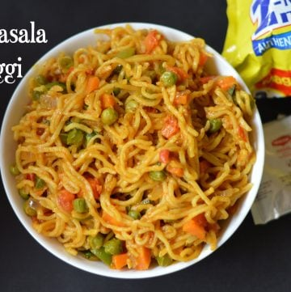

Maggie

Recipe Details
This Maggi Instant Noodles recipe is India's most loved instant noodles food. People of all age groups love it, be it kids or adults. It is the perfect snack recipe to curb those late-night hunger pangs or when you are lazy to cook lunch or dinner.
Ingredients required
- Maggie Packet 2
- Eggs 2
- Vegetables half cup
Steps to make yummy Maggie
- Boil the water
- Add the Maggie from the packet to boiling water, make sure you are not breaking it
- After adding Maggie, continue boiling for 2 minutes
- After 2 mins check if the Maggie is cooked well, if its cooked drain the water
- If its not cooked well, then continue to cook for 2 more minutes
- Afte draining water add the cooked vegetables along with maggie masala and enjoy!